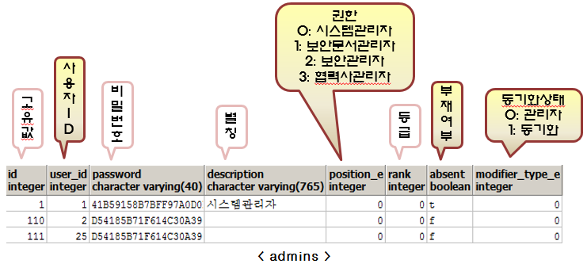

관리자 관리 (admins, admins_members)
관리자 관리 페이지에서 관리자 추가 및 관리대상 부서를 지정할 수 있다.
※ 테이블 설명

column 설명
-
absent: true 인 경우 부재라는 의미이며, 복호화 요청 결재자에서 제외된다.
-
password: HMAC SHA-256 해쉬 함수를 사용해서 비밀번호를 생성함
위 그림에서 admins_members 테이블의 의미
-
admins 테이블의 id 값이 198 인 관리자는 부서 id 가 5인 부서를 관리한다는 의미
-
만약 admin_id = 2, attach_e = 0, attach_id = 3 이라면, admins 테이블의 id 가 2 인 관리자는 부서 id 3 을 관리한다는 의미
이전